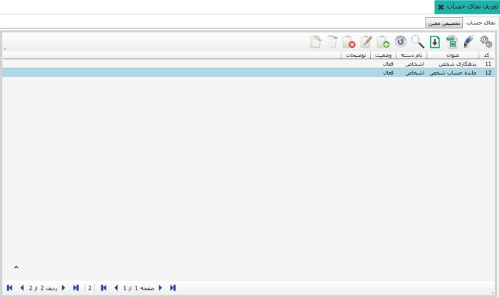
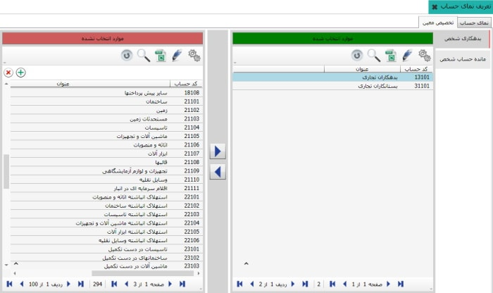
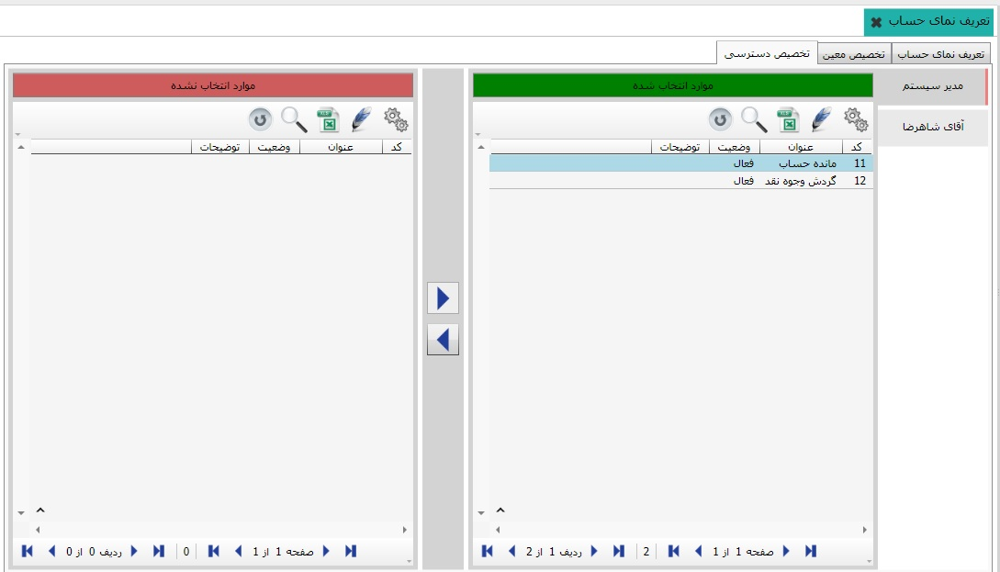

نمای حساب، همانند فیلتری در تهیه ی گزارشات کاربرد دارد. شما می توانید با ایجاد یک نمای حساب دلخواه و تخصیص متناسب معین، گزارش مورد نظر خود را مشاهده نمایید. صفحاتی که که در آنها فیلتر نما قابل اعمال می باشد، مرور و مشاهده ی حساب ها، مرور و مشاهده ی حساب اشخاص، تهیه و چاپ سند خلاصه و ... می باشند. صفحه ی نمای حساب دارای سه تب «نمای حساب» و «تخصیص معین» و می باشد.
تصویر زیر صفحه ی نمای حساب را نمایش می دهد، در این قسمت شما می توانید با استفاده از کلید اضافه (F8)نمای مورد نظر خود را ایجاد کنید.
با استفاده از کلیدی که در تصویر زیر با «تعیین دسته نما» رنگ قرمز مشخص شده است امکان تعیین دسترسی به نما فراهم خواهد شد.
امکان تخصیص به نمای حساب هایی که در تب پیشین ساخته اید، معین های مورد نیاز خود را تخصیص داده، به کمک این امر شما در هر بخشی از نرم افزار که این نما را بکار برده اید، گردش حساب را براساس معین های این نما به شما نمایش خواهد داد.
در تب «تخصیص دسترسی» مطابق تصویر زیر شما می توانید نمای حساب را به کاربر مورد نظر خود تخصیص دهید.
